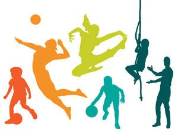
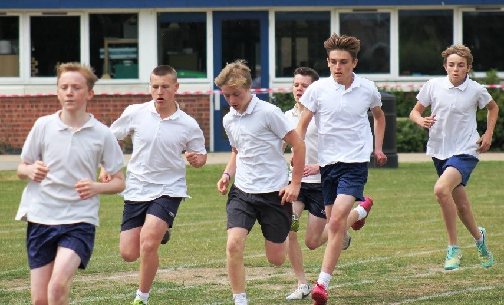

|
The curriculum for 9th Grade Physical Education stresses the promotion of a healthy lifestyle. Teamwork, cooperation and sportsmanship are emphasized. We at Citrus Valley High School have set specific goals for our students. We realize that all students do not have the same abilities or levels of fitness.
Research shows that Physical activity and fitness may enhance concentration and classroom behavior, which may contribute positively to academic achievement. Physical activity may improve mental health and self-esteem, and can also alleviate stress, anxiety, and depression problems that can hurt school performance. Exercise and fitness may affect brain function and improve cognitive functioning. The achievement orientation of motivated students may drive them to succeed in both academics and physical fitness. A student's physical fitness may reflect overall health (such as nutrition or weight status) and good health may contribute positively to academic achievement.
Each student will be given a locker in which to keep his/her physical education items. Each student is responsible for the locker. If something is missing from a student's locker the school is NOT responsible. In order to protect one's items make sure the locker is locked at all times and do not share combinations with others. Valuables such as phones, I-pods, jewelry, and money should not be kept in the PE locker room. These items should be kept in the student's lockers.
|


|